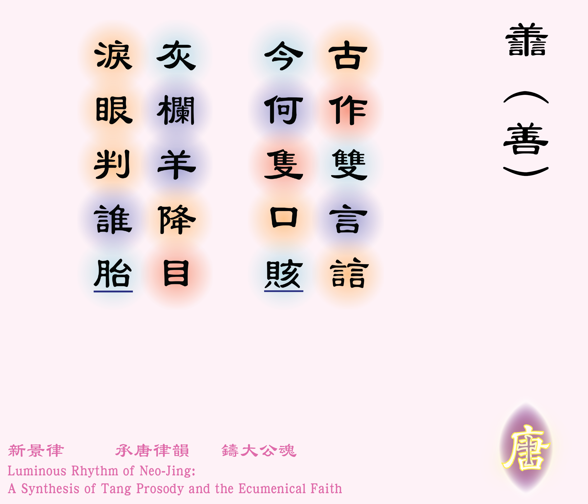
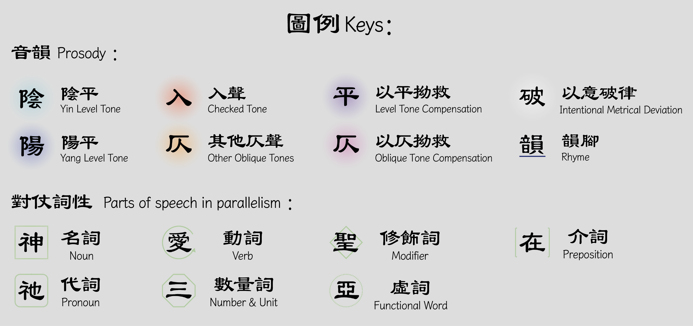

古作雙言誩 [1] 誩：粵音競，爭吵的意思。，今何隻口賅 [2]賅：粵音該，包含的意思。？
灰闌羊垂視 [3]灰闌：指元代雜劇《包待制智賺灰欄記》，講述包拯審判兩個婦人爭奪兒子的案件，包拯利用生母不忍孩子受苦的母性，判斷誰是生母。此故事因與撒羅滿王的案件性質相似，因而借代了撒羅滿的斷案，見〈列王紀上3:16-27〉，淚眼判誰胎 。
體裁：五言絕句、拆字詩（仄起首句不入韻）
韻部：平水韻．十灰
創作日期：二零二六年八月二十八日
